방송통신산업기사 (2017-03-04 기출문제)
1과목: 디지털 전자회로
1. 다음 중 초크입력형 평활회로의 특징에 대한 설명으로 틀린 것은?
- 출력직류전압이 낮다.
- 전압변동률이 적다.
- 첨두 역전압이 높다.
- 부하저항이 적을수록 맥동이 적다.
(정답률: 72%)

2. RC 평활회로에서 시정수 RC=1이고 5[V]의 구형펄스를 입력했을 때 커패시턴스의 방전시 파형으로 맞는 것은?
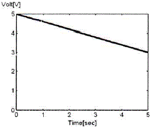
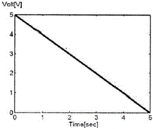
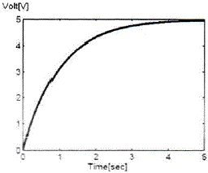
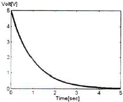
(정답률: 89%)
3. 다음 중 이미터 폴로워(Emitter Follower)의 특징이 아닌 것은?
- 입력 임피던스가 높다.
- 출력 임피던스가 낮다.
- 전압 이득이 1에 가깝다.
- 전류 이득이 1에 가깝다.
(정답률: 76%)
4. 다음 그림의 회로에 대한 선형동작을 위한 교류콜렉터(Collector) 전류의 최대 변동값 IC(p-p) (Peak to Peak)은 얼마인가? (단, 베이스-이미터 전압 VBE=0으로 가정한다.)
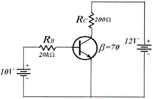
- 20[mA]
- 50[mA]
- 60[mA]
- 70[mA]
(정답률: 63%)
5. 다음 중 무궤환시 회로와 비교해서 부궤환시 증폭기의 일반적 특성이 아닌 것은?
- 부하 변동에 의한 이득 변동이 감소한다.
- 저역 차단주파수가 증가한다.
- 이득이 감소한다.
- 일그러짐과 잡음이 감소한다.
(정답률: 70%)
6. 크로스오버(Crossover) 일그러짐은 어떤 증폭방식에서 발생하는가?
- A급
- B급
- AB급
- C급
(정답률: 64%)
7. 다음 중 발진기에서 이용되는 궤환회로로 옳은 것은?
- 정궤환회로
- 부궤환회로
- 정궤환과 부궤환 모두 사용한다.
- 궤환회로를 사용하지 않는다.
(정답률: 88%)
8. 다음 중 수정발진기의 주파수 안정도가 양호한 이유로 틀린 것은?
- 수정진동자의 Q(Quality-factor)가 높다.
- 발진을 만족하는 유도성 주파수 범위가 매우 좁다.
- 수정진동자는 항온조 내에 둔다.
- 부하변동을 전혀 받지 않는다.
(정답률: 81%)
9. 다음 중 교류 신호를 구성하는 기본적인 요소가 아닌 것은?
- 진폭
- 주파수
- 증폭도
- 위상
(정답률: 89%)
10. 다음 중 콜렉터 변조 회로의 특징으로 틀린 것은?
- 직선성이 우수하다.
- 피변조파의 동작점을 C급으로 한다.
- 100[%] 변조가 가능하다.
- 소전력 송신기에 매우 적합하다.
(정답률: 65%)
11. 다음 중 펄스변조방식이 아닌 것은?
- 펄스진폭변조(PAM)
- 펄스폭변조(PWM)
- 펄스수변조(PNM)
- 펄스반응변조(PRM)
(정답률: 86%)
12. 다음 설명과 같은 특징을 갖는 변조방식은 어느 것인가?
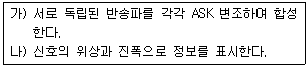
- BPSK
- DPSK
- QAM
- QPSK
(정답률: 94%)
13. 다음 중 저역통과 RC회로에서 시정수(Time Constant)에 대한 설명으로 옳은 것은?
- 출력신호 최종값의 50[%]에 도달할 때까지의 입력신호에 대한 응답 상승속도
- 출력신호 최종값의 63.2[%]에 도달할 때까지의 입력신호에 대한 응답 상승속도
- 출력신호 최종값의 76.5[%]에 도달할 때까지의 입력신호에 대한 응답 상승속도
- 출력신호 최종값의 81.2[%]에 도달할 때까지의 입력신호에 대한 응답 상승속도
(정답률: 82%)
14. 다음 중 슈미트 트리거(Schmitt Trigger)의 출력 파형으로 적합한 것은?
- 구형파
- 램프파
- 톱니파
- 정현파
(정답률: 84%)
15. 16진수 (2AE)16을 8진수로 변환하면?
- (257)8
- (1256)8
- (2557)8
- (4317)8
(정답률: 90%)
16. 논리식
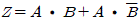
를 단순화한 것은- Z = A
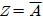
- Z = B
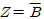
(정답률: 76%)
17. 다음의 카르노 맵을 간략화한 논리식으로 옳은 것은?
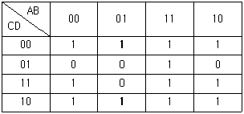
-
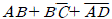
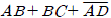
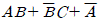
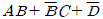
(정답률: 72%)
18. 다음 중 비동기식 계수기에 관한 설명으로 틀린 것은?
- Ripple Counter는 비동기식 계수기이다.
- 전단의 출력이 다음 단의 트리거로 작용한다.
- 각 단의 지연이 거의 없어 반응이 비교적 빠른 계수기이다.
- 상향 또는 하향으로 설계할 수 있다.
(정답률: 64%)
19. 다음은 디지털 시계의 블록 다이어그램이다. 괄호 안에 들어갈 알맞은 항목은 무엇인가?
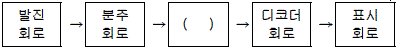
- 플립플롭회로
- 카운터회로
- 증폭회로
- 드라이브회로
(정답률: 78%)
20. 다음 중 레지스터의 기능으로 옳은 것은?
- 펄스 발생기이다.
- 카운터의 대용으로 쓰인다.
- 회로를 동기시킨다.
- 데이터를 일시 저장한다.
(정답률: 92%)
2과목: 방송통신 기기
21. 다음 중 방송제작 시스템의 외부제작 설비로 볼 수 없는 것은?
- SNG 시스템
- 스튜디오
- News Picp-up VAN
- 중계차와 ENG
(정답률: 93%)
22. 다음 중 마이크의 지향성과 관계 없는 것은?
- 전지향성
- 단일지향성
- 수직지향성
- 양지향성
(정답률: 86%)
23. 국내 지상파 DMB방송에서 하나의 DMB블럭(앙상블)이 차지하는 주파수 밴드폭은 어느 정도인가?
- 1.536[MHz]
- 19.39[MHz]
- 2.048[8]
- 6[MHz]
(정답률: 73%)
24. 방송 프로그램을 최종적으로 송출하기 위한 설비가 집중되어 있는 곳은?
- 부조정실
- 주조정실
- 종합편성실
- TV 스튜디오
(정답률: 89%)
25. 변조도가 60[%]인 AM송신기에서 반송파의 평균전력이 500[mW]일 때 출력의 평균전력은?
- 460[mW]
- 520[mW]
- 590[mW]
- 700[mW]
(정답률: 67%)
26. 다음 중 AM 방송의 특징으로 옳지 않은 것은?
- 피변조파의 대역폭이 좁다.
- 피변조파의 전력이 적다.
- 변복조 회로가 비교적 간단하다.
- 전송로의 진폭 잡음에 강하다.
(정답률: 90%)
27. AM 변조에서 피변조파의 총전력과 반송파 전력의 비는? (단, m은 변조도를 나타낸다.)
- 1 + m2/2
- 1/2 + m2
- 1 + m2/4
- 1/4 + m2
(정답률: 81%)
28. 다음 그림과 같은 파일롯 톤 방식의 FM 스테레오 방송 송신기 구성 블록의 ㈎, ㈏에 적당한 것은?
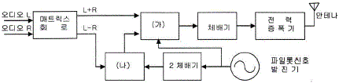
- ㈎ : FM변조기 ㈏ : 평형변조기
- ㈎ : 평형변조기 ㈏ : FM변조기
- ㈎ : PM변조기 ㈏ : 적분기
- ㈎ : FM변조기 ㈏ : PM변조기
(정답률: 78%)
29. Nyquist(나이키스트) 주파수는 어떤 것인가?
- 표본주파수
- 중간주파수
- 발진주파수
- 수신주파수
(정답률: 71%)
30. ATSC 디지털 TV방송의 설명으로 잘못된 것은?
- 채택국가 : 미국, 캐나다, 한국
- 변조방식 : 8VSB
- 채널간격 : 6[MHz]
- 이동수신에 장점이 있다.
(정답률: 88%)
31. 디지털스튜디오의 luminance(Y) 색차신호(CR,CB)의 SAMPLE 신호규격은?
- (4 : 4 : 2)
- (4 : 2 : 1)
- (4 : 2 : 2)
- (4 : 2 : 0)
(정답률: 75%)
32. 다음 중 CATV 망의 기술적 문제점이 아닌 것은?
- 하향채널의 잡음깔대기 효과
- 인입잡음 및 혼신
- 상향채널의 대역폭 부족
- 상향채널의 유합잡음
(정답률: 84%)
33. 다음 중 우리나라 지상파DMB 전송방식과 관련된 용어가 아닌 것은?
- OFDM
- DQPSK
- RCPC
- ONU
(정답률: 85%)
34. 변조된 파형의 각 STEP에 있어서 가장 높은 STEP을 제외한 모든 버스트가 40[IRE]이고 가장 높은 STEP 버스트가 35[IRE]일 때 DG값은?
- 5[%]
- 12.5[%]
- 15[%]
- 15.5[%]
(정답률: 61%)
35. 컬러 모니터를 포함한 방송장비 조정을 위해 사용되는 컬러-바 신호와 관계가 먼 것은?
- 휘도 레벨
- 백색 밸런스
- 색도 레벨
- 주파수 응답
(정답률: 87%)
36. 다음 중 영상 디지털 정보 4비트를 반송파 1[Hz]에 실어 보내는 변조방식은?
- QPSK
- ASK
- 16QAM
- 64QAM
(정답률: 50%)
37. CATV 증폭기에서 2개 이상의 신호를 증폭하는 경우 증폭기의 비직선 왜곡에 의해서 다른 신호내용이 겹치게 되는 것을 무엇이라 하는가?
- 혼변조
- 험(Hum)변조
- 과변조
- 누화
(정답률: 76%)
38. 신호의 스펙트럼 또는 주파수를 분해하여 그 크기를 화면에 보여주는 장비는?
- 스펙트럼분석기
- 오실로스코프
- 네트워크분석기
- 신호발생기
(정답률: 87%)
39. 다음 중 송신안테나 시스템의 구성설비가 아닌 것은?
- 급전장치
- 마이크로웨이브 변조장치
- 휘더부
- 안테나
(정답률: 80%)
40. 10[dB] 감쇠를 주는 동축케이블의 손실률은?
- 약 3.2
- 약 4.3
- 약 5.5
- 약 6.0
(정답률: 50%)
3과목: 방송미디어 개론
41. 다음 중 국내 FM 방송의 사용 주파수 대역은?
- 880[Hz] ~ 8,800[Hz]
- 88[kHz] ~ 108[kHz]
- 88[MHz] ~ 108[MHz]
- 8.8[GHz] ~ 10.8[GHz]
(정답률: 91%)
42. 150[MHz]인 반송파를 20[kHz]의 정현파로 FM변조한 경우 주파수편이가 f=1[kHz]일 때, 신호의 변조지수, 대역폭으로 옳은 것은?
- βf=0.⑤, BW=40[kHz]
- βf=0.1, BW=20[kHz]
- βf=0.2, BW=40[kHz]
- βf=0.3, BW=20[kHz]
(정답률: 83%)
43. 공기 속에서의 소리의 속도를 음속이라고 한다. 소리의 속도는 음을 전달하는 매체의 탄성율과 밀도에 의하여 결정된다. 상온(15[℃])에서의 음속은?
- 약 335[m/s]
- 약 340[m/s]
- 약 345[m/s]
- 약 350[m/s]
(정답률: 78%)
44. TV 화면에서 화면을 한 장, 한 장씩 넘겨주는 역할을 하는 신호는?
- 프레임 신호
- 필드 신호
- 싱크 신호
- I/Q 신호
(정답률: 64%)
45. 다음 중 비월주사의 특징이 아닌 것은?
- 순차주사에 비해 화질을 떨어뜨림이 없이 영상신호의 주파수 대역을 반으로 할 수 있다.
- 한 칸씩 뛰어넘어 주사하고 다시 그 사이를 반복 주사시키는 방법이다.
- 고급 TV방식에서 비월주사를 사용하는 것은 필요한 대역폭을 증가시키지 않고 TV수상화면의 플리커를 감소시킬 수 있기 때문이다.
- TV수상화면에 깜박임과 같은 광도의 변화가 심하다.
(정답률: 81%)
46. 다음 중 정지화상의 부호화 압축표준으로 사용되는 것은?
- MPEG-2
- MPEG-4
- JPEG
- H.261
(정답률: 91%)
47. 카메라로 촬영할 때 다음 보기 중 피사계 심도(depth of field)가 가장 얕은 것은?
- 조리개를 최대 개방하고(F값 최소) 초점거리를 제일 짧게 할 때
- 조리개를 최대로 조이고(F값 최대) 초점거리를 제일 짧게 할 때
- 조리개를 최대 개방하고(F값 최소) 초점거리를 제일 길게 할 때
- 조리개를 최대로 조이고(F값 최대) 초점거리를 제일 길게 할 때
(정답률: 83%)
48. 우리나라의 지상파 DMB에서 제공하는 데이터 서비스 중 주요 도로의 소통상황을 전자지도 위에서 원활(녹색), 정체(빨간색), 서행(노란색)으로 표시해주는 서비스는?
- CTT
- SDI
- POI
- BSI
(정답률: 87%)
49. 웹에서 자신의 계정을 통합적으로 관리하는 방식으로 각각의 사이트에서 아이디와 비밀번호를 관리하는 대신 접속하려는 사이트에서는 사용자 인증을 독립된 인증 서비스 제공자에게 맡기고, 인증 서비스 제공자가 사용자를 인증해서 어느 사이트나 하나의 아이디로 접속할 수 있도록 하는 표준 서비스는?
- Portal
- OpenID
- I-PIN
- Signin
(정답률: 80%)
50. DTV나 DMB의 데이터 방송에서 방송 프로그램과 관련된 데이터를 의미하는 용어는?
- PAD
- CTT
- POI
- BWS
(정답률: 68%)
51. 초단파 및 중파라디오 방송국에서 송신기의 기기조정 및 시험을 하기 위해 무선설비기준에서 구비토록 규정하고 있는 것은?
- 의사안테나
- 전류계
- 적산전력계
- 전압계
(정답률: 82%)
52. 멀티미디어의 사운드 파일 형식이 아닌 것은?
- RA
- WAV
- MP3
- GIF
(정답률: 91%)
53. 인터넷방송시스템에서 패킷의 경로를 분석하여 최적의 경로를 제어하는 장비는?
- 라우터(Router)
- 브리지(Bridge)
- 게이트웨이(Gateway)
- 모뎀(Modem)
(정답률: 65%)
54. 오디오를 디지털신호로 처리하는 CD는 샘플링 주파수가 44.1[kHz], 양자화비트수가 16비트이다. 대부분의 디지털 오디오기기는 2채널(스테레오)로 구성되어 있는데, 이 때 CD의 실제적인 전송속도는 얼마가 되는가?
- 352.8[kbps]
- 7⑤.6[kbps]
- 1411.2[kbps]
- 2822.4[kbps]
(정답률: 77%)
55. 다음 중 UHDTV에 대한 설명으로 틀린 것은?
- UHDTV는 Ultra High Definition TV로 정의한다.
- HDTV보다 최소 4~5배 선명한 화질을 자랑한다.
- 2채널의 오디오 기술에만 적용된다.
- 80인치대 대형 디스플레이에도 적용 가능하다.
(정답률: 94%)
56. 컴퓨터 네트워크 형태에서 서버기반(Server-Based) 네트워크의 장점이 아닌 것은?
- 시스템의 보안이 서버에 의해 제어된다.
- 네트워크 구축과 비용이 저렴하다.
- 파일과 자원의 접근 및 사용이 빠르다.
- 클라이언트 서버 접속에 필요한 하나의 비밀번호만을 사용한다.
(정답률: 74%)
57. 2분배기로 방송신호를 분배할 때 발생하는 손실은?
- 1[dB]
- 2[dB]
- 3[dB]
- 4[dB]
(정답률: 59%)
58. 다음 중 측파대(Side Band)에 관한 설명으로 틀린 것은?
- 측파대 주파수는 반송주파수의 위아래에 걸쳐 퍼져 있다.
- 측파대가 넓을수록 전파통로(Channel)는 좁아진다.
- 라디오 방소은 하나의 측파대만 써도 되지만 대부분 양쪽을 다 사용한다.
- 텔레비전은 주로 넓은 채널을 차지하는 잔류측파대(VSB)방식을 사용한다.
(정답률: 59%)
59. 공간적 높은 상관도를 갖고 배열된 데이터를 직교변환에 의해 저주파 성분과 고주파 성분에 이르기까지 여러 주파수로 나누어 성분별로 양자화하는 변환방식은?
- DCT 변환
- ADC 변환
- PCM 변환
- CDMA 변환
(정답률: 87%)
60. 다음 중 방송ㆍ통신망으로 사용되는 광케이블의 특징이 아닌 것은?
- 전자기적 잡음의 영향이 적다.
- 임피던스는 75[Ω]을 사용한다.
- 네트워크의 보안성이 크다.
- 전송 대역폭이 넓다.
(정답률: 86%)
4과목: 전자계산기 일반 및 방송설비기준
61. 다음 중 ROM과 RAM의 차이점을 설명한 것으로 틀린 것은?
- RAM은 휘발성 메모리이다.
- EPROM은 한 번 쓰면 지울 수 없다.
- RAM은 동적 RAM과 정적 RAM으로 나눌 수 있다.
- ROM의 종류에는 EPROM, EEPROM, PROM 등이 있다.
(정답률: 88%)
62. 다음 중 사진 및 그 외의 자료로부터 이미지를 읽어들이는 장치는?
- 키보드
- 스캐너
- 마우스
- 광학 문자 판독기(OCR)
(정답률: 83%)
63. 10진수의 산술 연산은 팩형식(Pack Decimal)의 데이터에 대하여 행하며, 필드의 길이는 16바이트까지 지정할 수 있는데 10진수의 최대 자리수는?
- 15자리
- 16자리
- 31자리
- 32자리
(정답률: 72%)
64. 정보데이터 비트가 4비트 1011일 때 짝수 패리티 비트의 전체 해밍코드는? (단, 맨 왼쪽 비트가 1번재 비트이다.)
- 0110011
- 1001001
- 0100101
- 1011010
(정답률: 54%)
65. 다음 Process Scheduling 정책 중 남은 시간이 가장 짧은 JOB을 우선적으로 처리하는 방식은?
- FIFO
- SJF
- HRN
- SRT
(정답률: 62%)
66. 다음 중 스케줄링에 대한 설명으로 틀린 것은?
- 컴퓨터 시스템을 구성하고 있는 주기억장치, 입출력장치, 처리시간 등의 시스템 자원을 언제 배분할 것인가를 결정한다.
- 처리 능력의 최대 응답시간, 반환시간, 대기시간의 단축 예측이 가능해야 한다.
- 여러 개의 CPU가 공동으로 하나의 일을 수행하는 경우에 전체로서 그 일의 실행시간을 최단으로 하도록 제어한다.
- 동적 스케줄링은 각 태스크를 프로세서에게 할당하고 실행되는 순서가 사용자의 알고리즘에 따르거나 컴파일할 때에 컴파일러에 의해 결정되는 스케줄링이다.
(정답률: 65%)
67. 다음 중 어셈블리 언어(Assembly Language)의 특징이 아닌 것은?
- 어려운 기계어 명령들을 쉬운 기호로 표현된다.
- 어셈블리 언어로 작성된 프로그램은 하드웨어에 종속적이다.
- 기계어에 비해 프로그래밍하기 쉽다.
- 하드웨어에 직접 접근할 수 없다.
(정답률: 74%)
68. 다음 중 C언어의 특징에 대한 설명으로 틀린 것은? (문제 오류로 실제 시험에서는 3,4번이 정답처리 되었습니다. 여기서는 3번을 누르면 정답 처리 됩니다.)
- 어셈블리어와 연계되는 언어이다.
- 강력하고 융통성이 많다.
- UNIX 체제에서는 사용할 수 없다.
- 객체지향형 언어이다.
(정답률: 83%)
69. 병렬 컴퓨터에서 컴퓨터의 속도를 향상시키기 위한 기술 중에 Super-Scalar을 설명한 것은?
- 한 명령어를 실행하는 과정을 여러 단계로 나누어 실행하는 기술
- 파이프 라이닝을 여러 개 두고 병행 실행하는 기술
- 명령을 그룹화하여 한번에 여러 개 명령을 동시에 처리하는 기술
- 동시수행가능 명령어를 컴파일 수준에서 하나로 압축하는 기술
(정답률: 64%)
70. 다음 중 주소 지정 방식에 대한 설명으로 틀린 것은?
- 직접 주소 지정 방식보다 간접 주소 지정의 주소 범위가 더 넓다.
- 간접 주소 지정 방식은 두 번 이상 메모리에 접속해야 실제 데이터를 가져온다.
- 레지스터 간접 주소 지정 방식에서 레지스터 안에 있는 값은 실제 데이터 주소이다.
- 즉시(또는 즉치) 주소 지정 방식에서 오퍼랜드는 기억장치의 주소 값이다.
(정답률: 59%)
71. 전송망사업의 정의에서 괄호 안에 들어갈 용어로 적절한 것은?
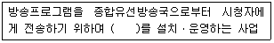
- 유ㆍ무선 광선ㆍ선로설비
- 유ㆍ무선 전송ㆍ선로설비
- 유ㆍ무선 방송ㆍ선로설비
- 유ㆍ무선 전송ㆍ방송설비
(정답률: 87%)
72. 전송망사업을 하고자하는 자가 미래창조과학부장관에게 제출할 등록신청서에 기재할 사항이 아닌 것은?
- 등록신청인
- 설립시 필요한 자금
- 기술인력현황
- 대표자경력증명서
(정답률: 86%)
73. 미래창조과학부장관 또는 방송통신위원회가 방송사업의 허가 및 승인을 할 때 심사사항이 아닌 것은?
- 방송의 객관성 및 당위성
- 재정 및 기술적 능력
- 방송의 공정성 실현 가능성
- 방송프로그램의 기획, 편성 및 제작 계획의 적절성
(정답률: 50%)
74. 다음 중 방송법의 목적과 관련이 없는 것은?
- 국민문화의 향상을 도모
- 방송의 발전과 공공복리의 증진
- 방송사업자의 발전과 권익보호
- 방송의 자유와 독립을 보장
(정답률: 83%)
75. 다음 중 종합유선방송국의 상향 주파수대역은 몇 [MHz]인가? (단, 2~6번 채널을 하향대역으로 사용할 수 없는 경우)
- 4.75[MHz] ~ 10.5[MHz]
- 5.75[MHz] ~ 65[MHz]
- 54[MHz] ~ 60[MHz]
- 60[MHz] ~ 66[MHz]
(정답률: 66%)
76. 선로설비의 회선 상호간 회선과 대지간 및 회선의 심선 상호간의 절연저항으로 옳은 것은?
- 직류 500[V] 절연저항계로 측정하여 1[MΩ] 이상
- 교류 500[V] 절연저항계로 측정하여 1[MΩ] 이상
- 직류 500[V] 절연저항계로 측정하여 10[MΩ] 이상
- 교류 500[V] 절연저항계로 측정하여 10[MΩ] 이상
(정답률: 77%)
77. 다음 중 방송국 검사의 종류가 아닌 것은?
- 수시검사
- 준공검사
- 임시검사
- 정기검사
(정답률: 83%)
78. 전기도체, 절연물로 싼 전기도체 또는 절연물로 싼 것의 위를 보호피막으로 보호한 전기도체 등으로서 300볼트 이상의 전력을 송전하거나 배전하는 전선을 무엇이라 하는가?
- 저전류전선
- 중전류전선
- 상전류전선
- 강전류전선
(정답률: 89%)
79. 유선방송국설비 등에 관한 기술기준에서 ″유선방소설비″의 정의는?
- 유선방송국설비와 전송선로설비를 말한다.
- 유선방송국설비와 전원설비를 말한다.
- 유선방송국설비와 수신설비를 말한다.
- 유선방송국설비와 송신설비를 말한다.
(정답률: 77%)
80. 다음 중 정보통신공사의 하자담보책임에서 대통령령이 정하는 기간이 3년에 해당하는 공사가 아닌 것은?
- 철탑공사
- 전송설비공사
- 위성통신설비공사
- 통신구공사
(정답률: 83%)